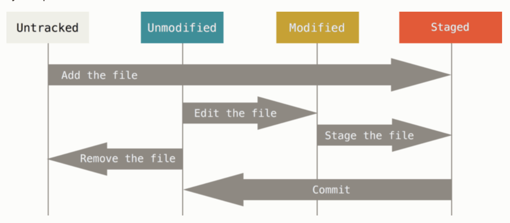

Git基础文件状态之版本穿梭
Contents
总结
-
git addmodified -> staged, untracked -> tracked -
git commitstaged -> unmodifed -
git rm --cached <filename>, tracked->untracked,git rm <filname>真实删除文件, -
git rmis about removing some file(s) from somewhere. -
git restore --staged <filename>staged->modified,git restore <filename>真实修改文件 -
git restoreis about copying some file(s) from somewhere to somewhere. -
index = staging area,
git add <filename>: stage the file -
working directory / working tree 就是项目文件夹
状态之间的切换
学习Git的时候发现一些基础的概念很是模糊, 于是读了一下文档, 在这记录一下,
Remember that each file in your working directory can be in one of two states: tracked or untracked. Tracked files are files that were in the last snapshot, as well as any newly staged files; they can be unmodified, modified, or staged. In short, tracked files are files that Git knows about. As you edit files, Git sees them as modified, because you’ve changed them since your last commit. As you work, you selectively stage these modified files and then commit all those staged changes, and the cycle repeats.

Modified -> Unmodified
早上接到老板的命令, 把昨天实现的功能再修改一下, 然后还没吃早饭你的开始各种操作, 俩小时整好了, 正准备add, commit, 然后突然老板打电话说客户又不想要了(WTF?), 然后你要一行一行把代码修改回之前的的内容吗? 不要怕, git可以帮助你,
理论不如实践, 我们修改一下a.txt(注意a.txt已经是tracked file), 然后观察它的状态:
|
|
Git提示了很多, git restore <file>...就是撤销刚刚的修改a.txt,
|
|
如果修改一个untracked file, git 没保存过它之前的内容, 也就不存在 git restore 这一说, 如下:
|
|
只是提示我们去使用git add去track这个文件
Staged -> Modified
如果你老板在你刚stage文件到staging area的时候给你打电话(还没commit), 那你应该怎么把文件从staged变回没修改之前呢?
分两步:
- Staged->Modified
- Modified->Unmodified 上面我们已经讨论过
|
|
Tracked -> Untracked
To remove a file from Git, you have to remove it from your tracked files (more accurately, remove it from your staging area) and then commit. The git rm command does that, and also removes the file from your working directory so you don’t see it as an untracked file the next time around.
If you modified the file or had already added it to the staging area, you must force the removal with the -f option. This is a safety feature to prevent accidental removal of data that hasn’t yet been recorded in a snapshot and that can’t be recovered from Git.
Another useful thing you may want to do is to keep the file in your working tree but remove it from your staging area. In other words, you may want to keep the file on your hard drive but not have Git track it anymore. This is particularly useful if you forgot to add something to your .gitignore file and accidentally staged it, like a large log file or a bunch of .a compiled files. To do this, use the --cached option:
|
|
git restore vs git rm
Because git restore is about copying a file or files, it needs to know where to get the files. There are three possible sources:
- the current, or
HEAD, commit (which must exist); or - any arbitrary commit that you specify (which must exist); or
- Git’s index aka staging area.
Because git rm is about removing a file or files, it only needs to know the name(s) of the file(s) to remove. Adding --cached tells git rm to remove these files only from Git’s index aka staging area.
Author David
LastMod 2023-05-05